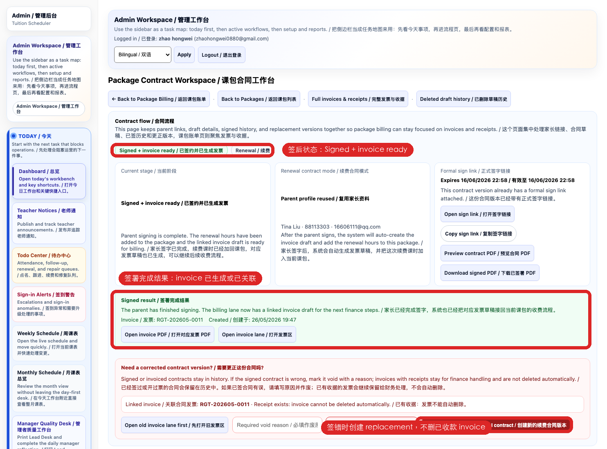
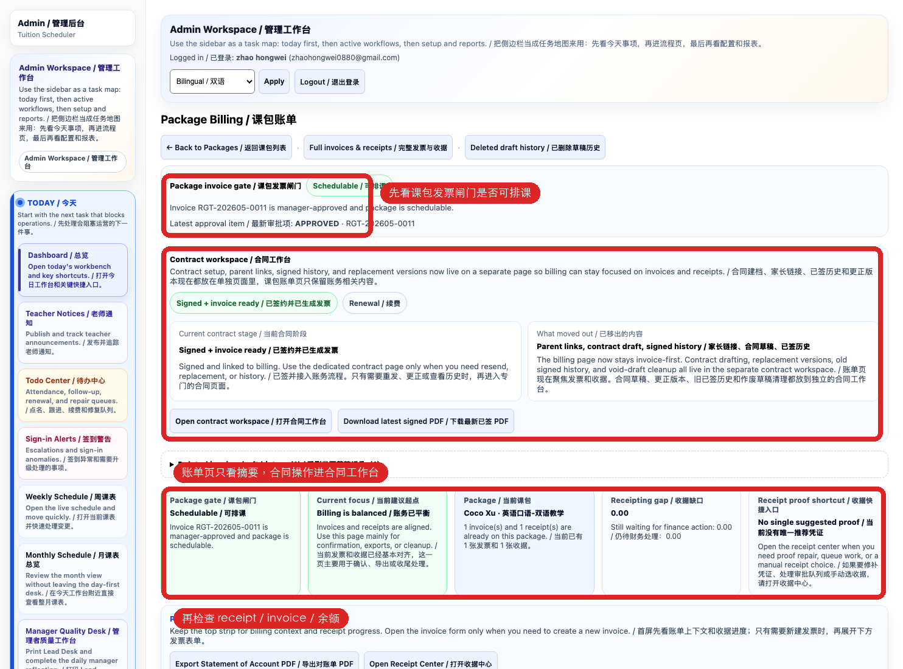

Send only the current official contract link; after signing, check status, PDF, and event log.发送当前正式合同链接；签署后检查状态、PDF 和事件记录。
4
Create or link the correct invoice in Package Billing; never duplicate an existing invoice.在 Package Billing 创建或关联正确发票；已有发票不得重复开票。
5
Direct-billing packages may be scheduled only after required approval; Finance closes payment and receipt work.直接收费课包通过规定审批后才可排课，付款与收据由财务闭环。
STEP 1 OF 5 / 第 1 步，共 5 步
Check the student, existing contracts, and packages first; determine first purchase or renewal and avoid duplicates.
先查学生、现有合同和课包，判断首购或续费，禁止重复建档。
Follow the red box or callout in the current system screenshot. / 按当前系统截图中的红框或标注操作。
Do this slowly / 请逐项操作
Confirm the page / 确认页面： Check the page title and make sure you are in the correct workspace. 核对页面标题，确认自己进入了正确的工作台。
Confirm the target / 确认对象： Recheck the student, teacher, owner, date, invoice, package, or task before editing. 修改前再次核对学生、老师、负责人、日期、发票、课包或任务。
Complete this step / 完成本步： Check the student, existing contracts, and packages first; determine first purchase or renewal and avoid duplicates. 先查学生、现有合同和课包，判断首购或续费，禁止重复建档。
Review before saving / 保存前复核： Read every changed field once more. Do not guess missing information. 重新检查所有变更字段；资料缺失时不要猜测填写。
Verify after saving / 保存后验收： Reopen or refresh the record and confirm the expected status is visible. 重新打开或刷新记录，确认预期状态已经显示。
STOP / 停止： If the name, amount, permission, status, or button differs from this guide, do not continue. Keep the current screen and ask the owner or manager. 姓名、金额、权限、状态或按钮与本教程不一致时不要继续；保留当前页面并询问负责人或主管。
Follow the red box or callout in the current system screenshot. / 按当前系统截图中的红框或标注操作。
Do this slowly / 请逐项操作
Confirm the page / 确认页面： Check the page title and make sure you are in the correct workspace. 核对页面标题，确认自己进入了正确的工作台。
Confirm the target / 确认对象： Recheck the student, teacher, owner, date, invoice, package, or task before editing. 修改前再次核对学生、老师、负责人、日期、发票、课包或任务。
Complete this step / 完成本步： Verify parent details, contracting entity, course, amount, validity, and purchase type. 核对家长资料、签约主体、课程、金额、有效期和购买类型。
Review before saving / 保存前复核： Read every changed field once more. Do not guess missing information. 重新检查所有变更字段；资料缺失时不要猜测填写。
Verify after saving / 保存后验收： Reopen or refresh the record and confirm the expected status is visible. 重新打开或刷新记录，确认预期状态已经显示。
STOP / 停止： If the name, amount, permission, status, or button differs from this guide, do not continue. Keep the current screen and ask the owner or manager. 姓名、金额、权限、状态或按钮与本教程不一致时不要继续；保留当前页面并询问负责人或主管。
STEP 3 OF 5 / 第 3 步，共 5 步
Send only the current official contract link; after signing, check status, PDF, and event log.
发送当前正式合同链接；签署后检查状态、PDF 和事件记录。
Follow the red box or callout in the current system screenshot. / 按当前系统截图中的红框或标注操作。
Do this slowly / 请逐项操作
Confirm the page / 确认页面： Check the page title and make sure you are in the correct workspace. 核对页面标题，确认自己进入了正确的工作台。
Confirm the target / 确认对象： Recheck the student, teacher, owner, date, invoice, package, or task before editing. 修改前再次核对学生、老师、负责人、日期、发票、课包或任务。
Complete this step / 完成本步： Send only the current official contract link; after signing, check status, PDF, and event log. 发送当前正式合同链接；签署后检查状态、PDF 和事件记录。
Review before saving / 保存前复核： Read every changed field once more. Do not guess missing information. 重新检查所有变更字段；资料缺失时不要猜测填写。
Verify after saving / 保存后验收： Reopen or refresh the record and confirm the expected status is visible. 重新打开或刷新记录，确认预期状态已经显示。
STOP / 停止： If the name, amount, permission, status, or button differs from this guide, do not continue. Keep the current screen and ask the owner or manager. 姓名、金额、权限、状态或按钮与本教程不一致时不要继续；保留当前页面并询问负责人或主管。
STEP 4 OF 5 / 第 4 步，共 5 步
Create or link the correct invoice in Package Billing; never duplicate an existing invoice.
在 Package Billing 创建或关联正确发票；已有发票不得重复开票。

Follow the red box or callout in the current system screenshot. / 按当前系统截图中的红框或标注操作。
Do this slowly / 请逐项操作
Confirm the page / 确认页面： Check the page title and make sure you are in the correct workspace. 核对页面标题，确认自己进入了正确的工作台。
Confirm the target / 确认对象： Recheck the student, teacher, owner, date, invoice, package, or task before editing. 修改前再次核对学生、老师、负责人、日期、发票、课包或任务。
Complete this step / 完成本步： Create or link the correct invoice in Package Billing; never duplicate an existing invoice. 在 Package Billing 创建或关联正确发票；已有发票不得重复开票。
Review before saving / 保存前复核： Read every changed field once more. Do not guess missing information. 重新检查所有变更字段；资料缺失时不要猜测填写。
Verify after saving / 保存后验收： Reopen or refresh the record and confirm the expected status is visible. 重新打开或刷新记录，确认预期状态已经显示。
STOP / 停止： If the name, amount, permission, status, or button differs from this guide, do not continue. Keep the current screen and ask the owner or manager. 姓名、金额、权限、状态或按钮与本教程不一致时不要继续；保留当前页面并询问负责人或主管。
STEP 5 OF 5 / 第 5 步，共 5 步
Direct-billing packages may be scheduled only after required approval; Finance closes payment and receipt work.
直接收费课包通过规定审批后才可排课，付款与收据由财务闭环。

Follow the red box or callout in the current system screenshot. / 按当前系统截图中的红框或标注操作。
Do this slowly / 请逐项操作
Confirm the page / 确认页面： Check the page title and make sure you are in the correct workspace. 核对页面标题，确认自己进入了正确的工作台。
Confirm the target / 确认对象： Recheck the student, teacher, owner, date, invoice, package, or task before editing. 修改前再次核对学生、老师、负责人、日期、发票、课包或任务。
Complete this step / 完成本步： Direct-billing packages may be scheduled only after required approval; Finance closes payment and receipt work. 直接收费课包通过规定审批后才可排课，付款与收据由财务闭环。
Review before saving / 保存前复核： Read every changed field once more. Do not guess missing information. 重新检查所有变更字段；资料缺失时不要猜测填写。
Verify after saving / 保存后验收： Reopen or refresh the record and confirm the expected status is visible. 重新打开或刷新记录，确认预期状态已经显示。
STOP / 停止： If the name, amount, permission, status, or button differs from this guide, do not continue. Keep the current screen and ask the owner or manager. 姓名、金额、权限、状态或按钮与本教程不一致时不要继续；保留当前页面并询问负责人或主管。
FINAL CHECK / 最终检查
Do not report completion until every item is true 以下项目全部确认后才能报告完成
Employee self-check / 员工自查
I used the correct account, workspace, and target record. / 我使用了正确账号、工作台和目标记录。
I completed every numbered step in order. / 我按顺序完成了每个编号步骤。
I reopened or refreshed the record and saw the expected final status. / 我重新打开或刷新记录并看到预期最终状态。
I saved non-sensitive evidence of the final result. / 我保存了不含敏感资料的结果证据。
I can explain what to do when the result is different. / 我能说明结果不一致时应如何处理。
Stop and escalate / 停止并升级
Required data or permission is missing. / 缺少必要资料或权限。
The page differs from the current guide. / 页面与当前教程不一致。
The action affects finance, packages, contracts, payroll, real sessions, or parent-visible content without authorisation. / 未获授权却会影响财务、课包、合同、工资、真实课次或家长可见内容。
The final state cannot be verified. / 无法确认最终状态。
Submit the training-data name, final status, and self-check evidence in Training Centre. Training roles never grant system permissions. 在培训中心提交培训数据名称、最终状态和自查证据。培训岗位不会授予系统权限。